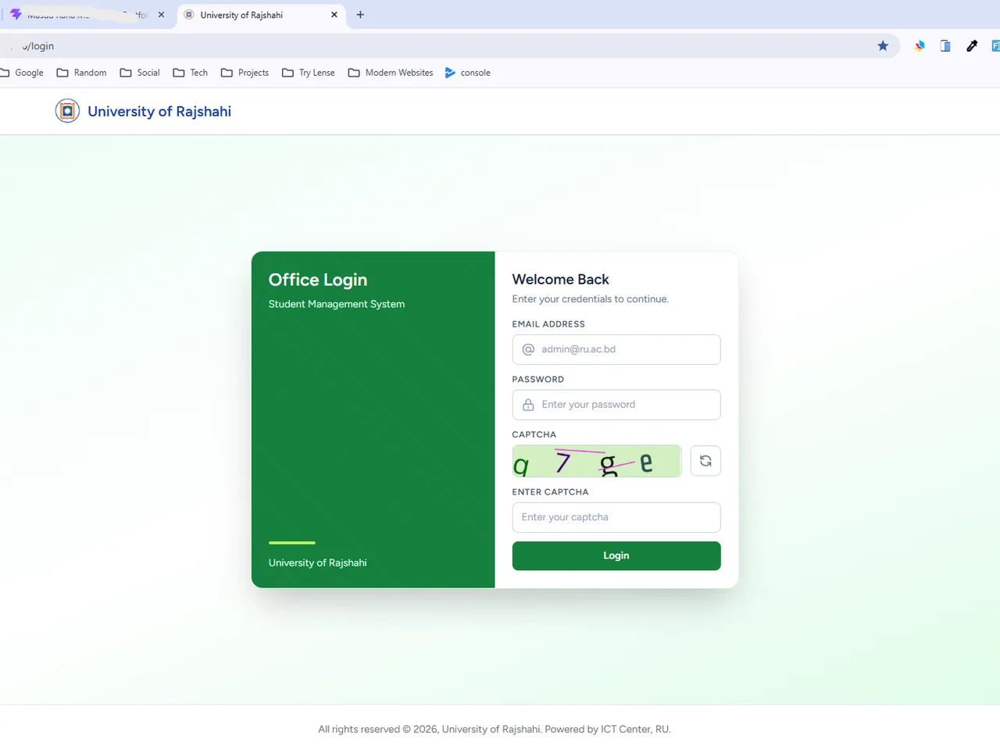

Rajshahi University Student Management System

A production student information system and central student-data service for Rajshahi University. One authoritative student record is served two ways: a server-rendered web application with organization-scoped panels for university officers, and a versioned REST API that gives other campus systems only the fields their token entitles them to. Live across the Academic Section, dean offices, departments, and residential halls.
Problem
Student data lived in separate spreadsheets across the Academic Section, dean offices, departments, and halls. Copies went stale between data dumps, a correction made in one office never reached the others, access to the database was all-or-nothing when it needed to be scoped, and nothing recorded who changed what.
Solution
A Laravel monolith holding one authoritative student record, with access scoped by organizational unit and by field at the query level. A correction made by an Academic Section officer is immediately visible to every downstream system, because those systems read the record over an API instead of keeping their own copy of it.
Key Features
- Fast student lookup by identifier, with sectioned record views — basic, personal, contact, identity, academic
- Record editing with cross-entity integrity validation and admission lifecycle handling (cancellation, reinstatement)
- Five scoped panels — Super Admin, Academic, Dean, Department, and Hall — each constrained to its own unit
- Official PDFs — admission forms, registration cards, migration certificates — with correct Bengali typesetting, embedded photographs, barcodes, and QR codes
- Column-picker spreadsheet exports with permission-gated contact fields
- Dashboards with faculty, department, program, and hall breakdowns, plus hall occupancy and cohort statistics
- Versioned integration API with capability-scoped tokens and an activity log carrying actor attribution and field-level diffs
- Legacy student module giving pre-system students bilingual name fields and document access
Challenges & Engineering Deep Dive
Scoping Access by Organizational Unit and by Field
A hall clerk, a department officer, a dean, and an Academic Section officer all need the same student record but a different slice of it. Filtering in the view layer would have been the easy path — and the wrong one, since the unauthorized rows would still be loaded and one missed template condition would leak them.
How I solved it: Permission is enforced at the query level, not the display level. A hall clerk's queries are constrained so other halls' students are not returned at all. A single declarative configuration maps each section of the student record to the capability required to read it and the rules used to validate it, so adding a field means editing one map rather than hunting through controllers and Blade templates. There is no self-registration anywhere in the system — accounts are provisioned by administrators only.
Official Documents with Correct Bengali Typesetting
Admission forms, registration cards, and migration certificates are official university documents — they have to render Bangla script correctly, carry the student's photograph, and be verifiable in hand. Complex-script shaping is where most PDF pipelines quietly produce broken output.
How I solved it: Documents are rendered from the live record at print time rather than stored as static files, so a correction shows up on the next printed copy instead of leaving a stale PDF in circulation. The generator handles complex-script shaping for Bangla, embeds photographs, and stamps barcodes and QR codes for verification. Registration cards ship in two layout options, and migration certificates are generated for outgoing students on demand.
Integration API — Capabilities, Not Access
Other university systems needed student data, and the obvious request was always the same: a database account, or a nightly dump. Both recreate the original problem — a second copy that drifts, and far broader access than the consuming system actually needs.
How I solved it: A versioned REST API issues tokens carrying an explicit capability checklist. Responses include only the sections that token is entitled to — a hall-management system asking for name and hall assignment receives exactly that, never identity documents or contact information. Business logic for statistics, exports, updates, and documents lives in a service layer beneath both the web and API surfaces, so the two never drift apart, and cohort-scale operations run through validated transactional endpoints.
Staying Fast on Old Campus Machines
Officers work on older campus hardware over a university network. Student tables run to cohort scale, and full-university exports and document batches are routine — enough to exhaust memory or hang a page if handled naively.
How I solved it: The application is server-rendered by design; an SPA would have added overhead to what are fundamentally form-and-table workflows. Lists return nothing until a search is actually performed, queries select only the columns being displayed, and dashboards aggregate inside the database rather than in PHP. Spreadsheet exports and document generation stream in chunks, so memory stays constant no matter how large the batch.
Auditability and Authorization as Source Code
For a record that many offices can edit, "who changed this, and when?" has to have an answer. Routing-table permission lists tend to answer it badly — the rule sits far from the action it protects, and the two drift apart as the system grows.
How I solved it: Capabilities are declared adjacent to the protected action rather than in a routing table, so the guard is visible in the same place as the code it guards. Model-level activity logging records every change with actor identity, timestamp, and field-level diffs, and the same attribution covers permission modifications, exports, and integration calls. Integration tokens are managed through explicit capability checklists rather than free-form scopes.
Why There's No Public Demo
The system holds protected, identifiable student records, runs behind university network restrictions, requires institution-provisioned accounts, and depends on internal authentication services — so there is no public login to hand out. The screenshot above is the officer login screen; the repository README documents the architecture, access model, and integration contract in full.